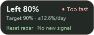

Understand your pace
Compare quota consumed with the week elapsed. See Slow, On track, Fast or Too fast, plus an exhaustion estimate and daily budget.
WINDOWS · OPEN-SOURCE DESKTOP WIDGET
Know what is left and how fast to use it. Keep weekly quota, usage pace and reset signals above your existing Codex Pet, so you can focus on the work.
Get the latest stable build on GitHub

Quota left / Target remaining / Daily budget / Reset radar
01 / FEATURES
Compare quota consumed with the week elapsed. See Slow, On track, Fast or Too fast, plus an exhaustion estimate and daily budget.
Reads public community signals from codex-reset.com. New strong signals and reset announcements can alert you. History syncs silently; repeated states do not notify again.
Follow your Pet, or choose Taskbar mode in Settings for an independent display with Pet closed. Both modes temporarily hide during supported system flyouts.
02 / YOUR PACE
Pace R = percentage of quota used ÷ percentage of the week elapsed. If 40% of the week has passed and 60% of quota is used, R = 1.5: Too fast.
Estimates assume a fixed seven-day window and average usage pace. Reaching the reset time does not automatically refill your quota.
Run CodexWeeklyPetHud.exe and keep its DLL files alongside it. No separate .NET installation is needed.
Follow your Codex Pet by default, or choose Taskbar mode in Settings from the tray. Click the HUD for details.
Use 设置 → 语言 / Language → English. If automatic quota reads fail, paste a reset time and remaining percentage instead.
WINDOWS x64 · MIT
Windows 10/11 x64 · .NET 8 runtime included · No automatic startup registration
This build is unsigned; Windows may show an unknown-publisher prompt. Exit the old version before upgrading and verify against SHA256SUMS.txt from the same release.
04 / CLEAR BOUNDARIES
Quota uses your local Codex login without logging tokens. Radar uses a separate public client without OpenAI credentials. Radar keeps checking with Pet hidden. Personal quota polling pauses in Pet mode and continues in Taskbar mode. Failed reads show a delay, not “no signal.”
A community announcement does not confirm a reset for your account. Radar never changes quota or redeems reset credits.
Check Display mode in tray Settings. Pet mode needs an open Pet; Taskbar mode uses free space on the primary horizontal taskbar without pushing icons aside. System flyouts temporarily hide the HUD.
Check site access and your system proxy. If public endpoints reject the native client, an installed Python interpreter can provide a compatibility fallback. The app does not install Python.
This fork currently publishes and verifies Windows x64 only. Other platform code is retained from upstream for reference.